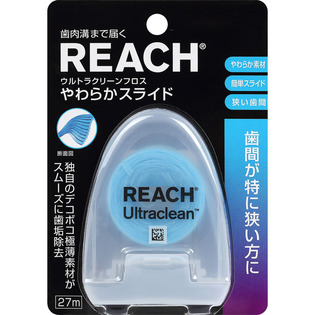
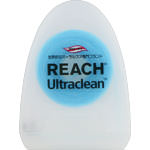

返回列表
产品名称：リーチ クリーンペーストやわらかフロスオリジナル

銀座ステファニー化粧品 リーチ クリーンペーストやわらかフロスオリジナル ２７ｍ
メーカー 銀座ステファニー化粧品
JANコード 4560279550256
商品の特徴
歯間が特に狭い方に。
独自のデコボコ極薄素材がスムーズに歯垢除去。
成分・分量
【成分】
フロス素材： 歯科用ナイロン糸、甘味剤（サッカリンナトリウム）
用法及び用量